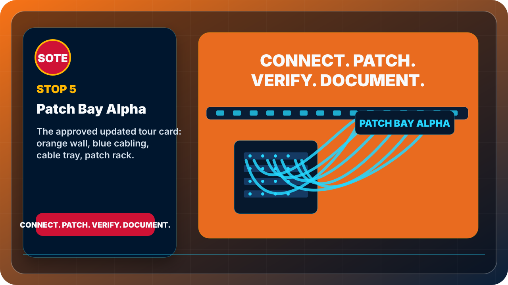

Mission focus
Patch / Route / Secure
This page is restored as an individual destination for tours, QR codes, project notes, and student mission assignments.
Patch and edge
The staging rack for patching, routing, firewall demonstrations, and security-edge learning.

Patch / Route / Secure
This page is restored as an individual destination for tours, QR codes, project notes, and student mission assignments.